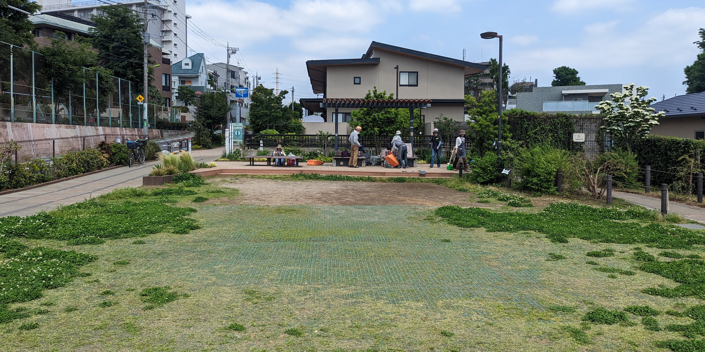
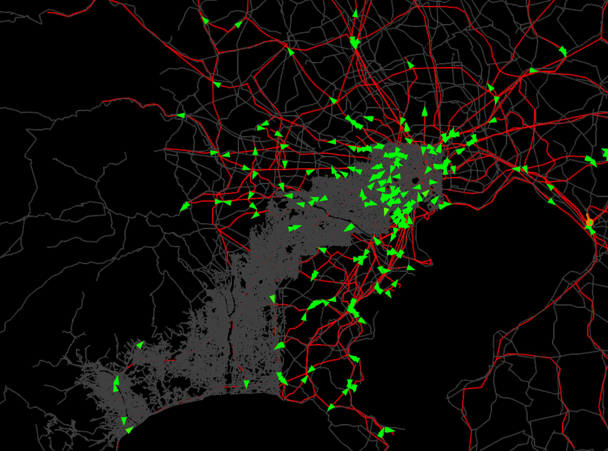

🚆 TransitFlow: Real-Time Transit Simulation
**TransitFlow** is an advanced real-time **public transportation simulation tool** designed to optimize urban mobility.
🌟 Key Features:
- 📍 **Interactive Mapping** – Simulate transport networks using **GIS data**.
- 📊 **Data-Driven Insights** – Predict delays, congestion, and optimal routes.
- 🚍 **Multi-Mode Transport** – Supports buses, subways, trams, and rideshares.
- 🔄 **Dynamic Routing** – Adjusts routes based on real-time congestion data.
🛠️ Technologies Used:
Developed using **Python, JavaScript, R (Tidyverse), and GIS libraries** like **Leaflet.js & GeoJSON**.
📸 Project Screenshots:

🔗 Project Demo & Code:
Check out the full project on GitHub.